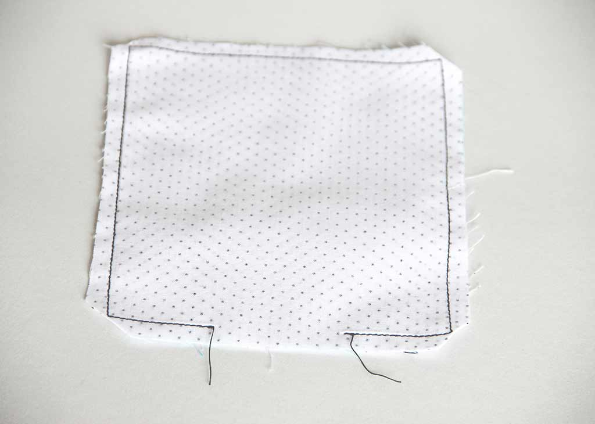
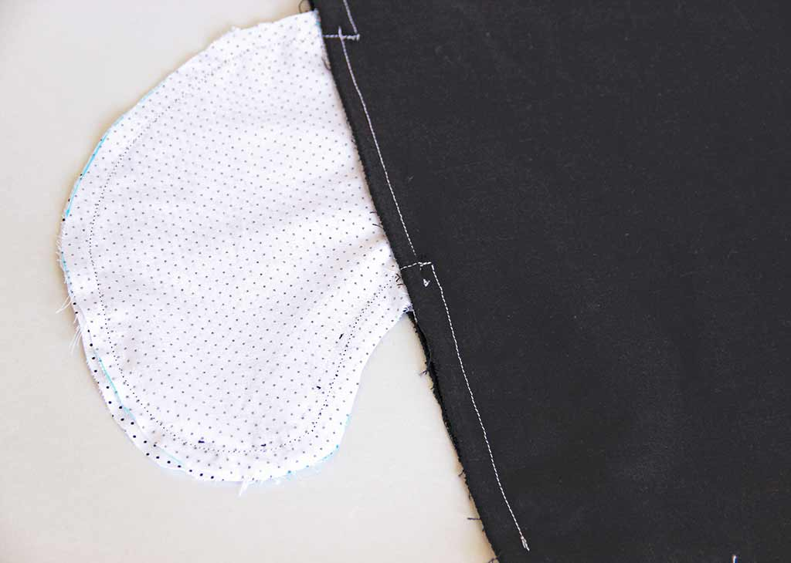

Poches italiennes, poches à rabat ou à soufflets, poches plaquées ou prises dans les les côtés, poches raglan, passepoilées ou zippées : vous avez l’embarras du choix pour glisser vos mains ! Les plus faciles à poser sont les poches plaquées et les poches prises dans les coutures de côté. Elles ont l’avantage d’être simples à dessiner et à coudre. Vous pourrez les ajouter, sans avoir à modifier le patron, sur n’importe quel vêtement : pantalon, jupe, robe, tunique, etc.
Les poches plaquées
Les poches plaquées simples ont le double avantage d’être rapides à faire et de nécessiter peu de tissu. On retiendra cette technique pour les poches carrées ou rectangles : former des replis arrondis propres s’avère particulièrement délicat. La partie supérieure sera formée d’un simple rabat surfilé ou bien d’un empiècement permettant d’intéressantes variations.
Poche simple à rabat - Surfiler un bord et former le rabat. Sur les trois autres bords, former des replis de largeur identique et repasser.Poche simple à rabat - Rabattre les coins inférieurs en passant par les intersections des replis. Repasser puis déplier.Poche simple à rabat - Plier en diagonale et piquer sur l'envers sur la dernière marque du fer.Poche simple à rabat - Les angles inférieurs sont piqués.Poche simple - Couper le surplus de tissu des angles inférieurs.Poche simple à rabat - La poche est prête à poser.Poche simple à rabat - Epingler puis coudre sur le vêtement.Poche simple à rabat - Faire un piqure de renforcement dans les coins supérieurs.Plutôt que de faire un rabat, on peut réaliser un empiècement.Poche à empiècement - Assemblage de l'empiècement et de la poche, endroit sur endroit.Poche à empiècement - Il ne reste plus qu'à former les coins inférieurs.
Les poches peuvent être doublées. Cette technique nécessite plus de tissu que la technique des poches simples, mais a l’avantage de permettre toutes les formes. Retenez notamment cette méthode si vous souhaitez coudre des poches avec un arrondi ou une courbe.
Pour les poches doublées, il faudra deux pièces pour confectionner une poche.

Poches doublées - On pique le pourtour en laissant une ouverture de quelques centimètres.Poche doublée - La poche doublée est retournée sur l'endroit. L'ouverture sera piquée au moment de l'assemblage au vêtement.
Les poches de côté
Les poches prises dans les coutures de côté peuvent être ajoutées à vos projets de jupes, robe et pantalons, et ce même si le patron n’en prévoit pas. Elles seront simplement ajoutées juste avant de procéder aux coutures latérales du vêtement. En outre, il est assez facile de les dessiner soi-même et elles pourront être adaptées à la taille voulue (homme, femme, enfant). Vous pouvez les réaliser dans le même tissu que votre projet, ou choisir un tissu contrastant : bien posées, les poches sont très discrètes sur le vêtement porté, mais lui confèrent une touche originale. C’est le moment de sortir vos chutes de tissu !
Attention cependant à respecter quelques règles de bon sens :
Choisissez un tissu d’épaisseur égale ou inférieure que le tissu principal de votre projet. Vous voulez éviter les épaisseurs disgracieuses au niveau des cuisses. Soyez particulièrement vigilant si le vêtement est près du corps.
Si votre tissu est clair, évitez les tissus foncés qui pourraient se voir en transparence.
Choisissez un tissu agréable au toucher : celui-ci sera en contact direct avec la peau.
Pour confectionner les deux poches d’un vêtement, vous avez besoin de quatre pièces. Pour éviter toute erreur de sens au moment de la coupe, découpez deux gabarits de poche en papier. Épinglez-les sur le tissu plié en deux, endroit sur endroit et en respectant le droit fil du tissu.
Pour une poche, il faut deux pièces de tissu.Endroit sur endroit, piquer une pièce de poche sur le devant en laissant deux centimètres de part et d'autre. Répéter pour l'autre pièce et le dos du vêtement.Epingler les devant et dos en faisant sortir les poches.Piquer le côté du vêtement jusqu'au niveau de la poche en dépassant d'un centimètre environ la première couture.Epingler et piquer les deux épaisseurs de poche.

Piquer le contour des poches : croiser la première couture et s'arrêter sur la couture de côté du vêtement.Entailler les surplus côté dos du vêtement. Dégarnir et surfiler les surplus de la poche.La poche est terminée.